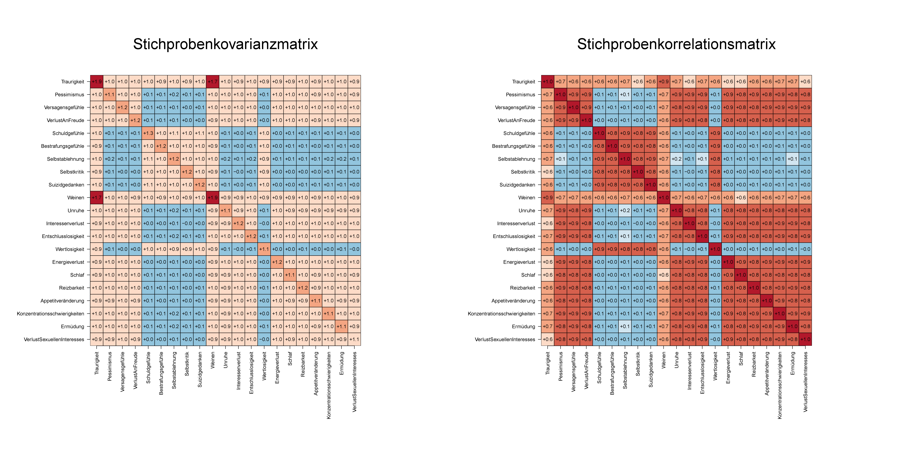

| 1 | 2 | 3 | 4 | 5 | 6 | 7 | 8 | 9 | 10 | 11 | 12 | |
|---|---|---|---|---|---|---|---|---|---|---|---|---|
| Traurigkeit | 4 | 3 | 0 | 2 | 2 | 4 | 2 | 0 | 3 | 4 | 1 | 3 |
| Pessimismus | 2 | 2 | 1 | 2 | 3 | 3 | 3 | 0 | 3 | 2 | 2 | 1 |
| Versagensgefühle | 2 | 2 | 0 | 2 | 3 | 3 | 3 | 0 | 2 | 2 | 2 | 1 |
| VerlustAnFreude | 2 | 2 | 1 | 2 | 3 | 3 | 3 | 0 | 2 | 2 | 2 | 1 |
| Schuldgefühle | 3 | 3 | 0 | 2 | 2 | 3 | 1 | 1 | 3 | 2 | 0 | 4 |
| Bestrafungsgefühle | 3 | 3 | 0 | 2 | 3 | 3 | 1 | 1 | 2 | 3 | 0 | 4 |
| Selbstablehnung | 3 | 3 | 0 | 2 | 2 | 3 | 1 | 1 | 2 | 3 | 1 | 4 |
| Selbstkritik | 3 | 3 | 0 | 2 | 3 | 4 | 2 | 1 | 2 | 3 | 0 | 3 |
| Suizidgedanken | 3 | 3 | 1 | 2 | 2 | 3 | 1 | 2 | 2 | 3 | 0 | 4 |
| Weinen | 3 | 3 | 0 | 2 | 3 | 4 | 2 | 0 | 3 | 3 | 1 | 2 |
| Unruhe | 2 | 2 | 0 | 2 | 3 | 3 | 3 | 0 | 2 | 2 | 3 | 2 |
| Interessenverlust | 2 | 2 | 1 | 2 | 3 | 4 | 3 | 0 | 3 | 2 | 2 | 1 |
| Entschlusslosigkeit | 3 | 2 | 1 | 2 | 3 | 4 | 3 | 0 | 2 | 2 | 2 | 1 |
| Wertlosigkeit | 4 | 3 | 1 | 2 | 2 | 3 | 1 | 2 | 2 | 2 | 0 | 4 |
| Energieverlust | 2 | 2 | 1 | 2 | 3 | 3 | 3 | 0 | 3 | 2 | 2 | 1 |
| Schlaf | 2 | 2 | 1 | 2 | 3 | 3 | 3 | 0 | 2 | 3 | 2 | 1 |
| Reizbarkeit | 2 | 2 | 2 | 2 | 3 | 3 | 3 | 0 | 2 | 2 | 3 | 1 |
| Appetitveränderung | 2 | 2 | 1 | 2 | 3 | 3 | 3 | 0 | 2 | 2 | 2 | 1 |
| Konzentrationsschwierigkeiten | 2 | 2 | 1 | 2 | 3 | 3 | 3 | 0 | 2 | 2 | 2 | 1 |
| Ermüdung | 3 | 2 | 1 | 2 | 3 | 3 | 3 | 0 | 2 | 2 | 3 | 1 |
| VerlustSexuellenInteresses | 3 | 2 | 1 | 2 | 3 | 3 | 3 | 0 | 2 | 2 | 2 | 1 |
51 Factor Analysis
The term factor analysis refers to various inference procedures referred to, which the underlying models have in common, that they use linear-affine transformations of unobservable random vectors generate the covariance structure of an observable random vector. There are in psychological application, realizations of the observable random vector typically the item values of a group of test subjects in a psychological test. The aim of a factor analysis is then to estimate the estimated Item \(\times\) Item Covariance matrix using a factor analysis model with the simplest possible structure to explain. The work of Spearman (1904), in which an attempt is made to determine the covariance structure of various performance test values using a general intelligence factor to explain and work on analyzing it 16PF questionnaire (Cattell (1957)) in terms of the Big Five factors of personality. In the context of questionnaire development, it has become established and reproducible Results of factor analyzes as an expression of the factorial validity of a Interpret the questionnaire.
Application example
We consider a simulated data set according to the results of a study on the factorial validity of the German version of the BDI-II (Hautzinger et al. (2006), Keller et al. (2008)). Keller et al. (2008) consider a sample of \(n = 266\) depressed people Patients who meet the criteria at the time the BDI-II is processed depressive disorder according to ICD-10/DSM-IV. The table below shows the BDI-II item scores of the first 12 patients of the simulated data set, Figure 51.1 shows the entire data set as a colored data record matrix. Figure 51.2 shows the item \(\times\) item covariance and correlation matrices of the data set, which are the primary explananda of a factor-analytic modeling.


51.1 Factor analysis models
We start with the following definition.
Definition 51.1 (Factor Analysis Models in Structural Form) Be it \[ y = Lf + \varepsilon \tag{51.1}\] where for \(m > k\)
- \(y\) is an \(m\)-dimensional observable random vector called data, is,
- \(L = (l_{ij})\in \mathbb{R}^{m \times k}\) is a matrix called factor loading matrix,
- \(f\) is an \[\begin{equation} \mathbb{E}(f)=0_k \mbox{ and }\mathbb{C}(f) = I_k, \end{equation}\]
- \(\varepsilon\) is an \(m\)-dimensional unobservable random vector independent of \(f\), which is called observation error and for which the following applies \[\begin{equation} \mathbb{E}(\varepsilon) = 0_m \mbox{ and } \mathbb{C}(\varepsilon) = \mbox{diag}\left(\psi_1,..., \psi_m\right) =: \Psi \mbox{ with } \psi_i > 0 \mbox{ for } i = 1,...,m. \end{equation}\]
Then Equation 51.1 is called factor analysis model in structural form. It also applies that
- \(f \sim N(0_k,\Phi)\) with \(\Phi \in \mathbb{R}^{k \times k}\) p.d. and
- \(\varepsilon \sim N(0_m, \Psi)\) with \(\Psi := \mbox{diag}\left(\psi_1,...,\psi_m\right)\) for \(\psi_i > 0\) and \(i = 1,...,m\),
then Equation 51.1 is called Normal distribution model of factor analysis in structural form.
The data modeled by the components of the data vector \(y\) usually refer to the in the analysis of psychological test data Item scores of a test. Those modeled by the components of the vector \(f\) Factors are sometimes also called common factors and opposite the components of the random vector \(\varepsilon\), which are called specific factors (unique factors) are referred to. According to the matrix product \(Lf\) in \(\eqref{eq:fam}\) becomes the entry \(l_{ij}\) for \(i = 1,...,m, j = 1,...,k\) the factor loading matrix \(L\) for \(i = 1,...,m\) and \(j = 1,...,k\) the called the factor loading of the \(j\)th factor on the \(i\)th data component. Below we usually write the factor analysis model in the short form \[\begin{equation} y = Lf + \varepsilon \mbox{ with } f \sim (0_k,I_k) \mbox{ and } \varepsilon \sim (0_m,\Psi) \end{equation}\] The notation \(\zeta \sim (\mu,\Sigma)\) is intended to express that \(\mathbb{E}(\zeta)=\mu\) and \(\mathbb{C}(\zeta)=\Sigma\) are and \(f\) and \(\varepsilon\) are said to be independent be random vectors.
Distribution form of the factor analysis model
In distributional form, the factor analysis model can be written equivalently as \[\begin{equation} \mathbb{P}(f,y) = \mathbb{P}(f)\mathbb{P}(y|f) \mbox{ with } f \sim (0_k,I_k) \mbox{ and } y\,|\,f \sim (Lf,\Psi). \end{equation}\] This reveals the conditionality of the distribution of \(y\) to \(f\) from a data generation perspective as follows: First a value of \(f\) is created based on \(\mathbb{P}(f)\) realized, this value is then transformed by \(L\) and forms the expected value of the conditional distribution \(\mathbb{P}(y|f)\) of \(y\) given \(f\). Then a value of \(\varepsilon\) is realized and finally the values of \(Lf\) and \(\varepsilon\) are added to a value of \(y\). Correspondingly, the probability density applies to the normal distribution model of factor analysis \[\begin{equation} p(f,y) = p(f)p(y|f) \mbox{ with } p(f) = N(0_k,\Phi) \mbox{ and } p(y|f) = N(Lf,\Psi). \end{equation}\]
Factor Analysis Dataset Model
In the data analysis context, one looks at the existing item scores of a test subject: in \(j\), who has completed a psychological questionnaire or test, as the realization of one Subject-specific and distributed based on the distribution of the factor analysis model Random vector \(y_j\). At the same time it is assumed that this random vector has a Realization of the non-observable random vector \(f_j\), i.e. the subject-specific one factor values. Furthermore, it is assumed that the realizations of observable Random vectors \(y_1,...,y_n\) and their corresponding unobservable random vectors \(f_1,...,f_n\) via test subjects independently and identically according to an underlying distributed across subjects in the factor analysis model. Formally one expresses this either as a factorization of the common distribution of the observable and unobservable random vectors in the form \[\begin{equation} \mathbb{P}(f_1,y_1,...,f_n,y_n) = \prod_{j=1}^n \mathbb{P}(f_j,y_j) \mbox{ with } \mathbb{P}(f_j,y_j) = \mathbb{P}(f_k,y_k) \mbox{ for } 1 \le j,k \le n \end{equation}\] or in the sense of independent and identically distributed random vectors in the form \[\begin{equation} (f_1,y_1), ..., (f_n,y_n) \sim \mathbb{P}(f,y) \end{equation}\] out. What is crucial is that if a data matrix is available \(Y \in \mathbb{R}^{m \times n}\) as shown in Figure 51.1, assuming that for each column entry there is a virtual, unobserved, subject-specific, Factor vector value corresponds. Inference regarding subject-specific Factor values, i.e. the model estimator-based specification of the most likely values the subject-specific factor vector is used in the context of factor analysis However, it is referred to as Evaluation of Factorscores in the application usually not in the foreground.
Example (1) Spearman’s g-factor model
The basis of Spearman’s intelligence model is the correlation structure of Performance values in \(m = 6\) subject areas (Classics, French, English, Mathematics, Pitch discrimination, musical talent) in a sample of approximately 30 children aged 9 and 13 (Yanai & Ichikawa (2007)). Spearman (1904) explains the corresponding ones Performance values \(y_i\) using a factor analysis model of the form \[\begin{equation} \begin{pmatrix} y_1 \\ y_2 \\ y_3 \\ y_4 \\ y_5 \\ y_6 \\ \end{pmatrix} = \begin{pmatrix} l_1 \\ l_2 \\ l_3 \\ l_4 \\ l_5 \\ l_6 \\ \end{pmatrix} f+ \begin{pmatrix} \varepsilon_1 \\ \varepsilon_2 \\ \varepsilon_3 \\ \varepsilon_4 \\ \varepsilon_5 \\ \varepsilon_6 \\ \end{pmatrix} \Leftrightarrow y_i = l_if + \varepsilon_i \mbox{ for } i = 1,...,6. \end{equation}\] The latent random variable \(f\) denotes the General Factor of Intelligence and is traditionally referred to as the g factor. For the factor loadings \(l_i, i = 1,...,6\) requires Spearman (1904) \(|l_i| < 1\). The components \(\varepsilon_i\) are used in the context of Spearman (1904) referred to as subject area-specific factors. Accordingly, it is often said by: Spearman’s two-factor model is spoken in the sense of modern factor analysis However, there is only one factor and one vector of random errors in this model.
Example (2) Thurstone’s multifactor model
Thurstone (1947) proposes a general model of \(k\) with the multifactor model Factors to determine the covariance structure of an \(m\)-dimensional random vector, the \(m\) models performance test values of a group of test subjects. \(k < m\) should apply. In structural form, this model has the form \[\begin{equation} y_i = l_{i1}f_1 + l_{i2}f_2 + \cdots + l_{ik}f_k + \varepsilon_i \mbox{ for } i = 1,...,m \end{equation}\] and thus corresponds to the general form of a factor analysis model, where here the factors \(f_1,...,f_k\) as common factors and the random errors \(\varepsilon_1,...,\varepsilon_m\) are referred to as unique factors. For example, in Thurstone (1936) an attempt is made to show that to explain the observed covariance structure of performance test data from 240 test subjects seven factors (Memory, Word fluency, Verbal relation, Number, Perceptual Speed, Visualization, Reasoning), are needed.
Example (3) The model of parallel test measurements
Let \(y_1,...,y_m\) be the observable item values of a psychological test and be the model of parallel test measurements for the true value \(\tau\) in the form \[\begin{equation} y_i = \tau + \varepsilon_i \mbox{ for } i = 1,...,m \end{equation}\] with measurement error \(\varepsilon_i\). Then this model corresponds to the factor analysis model \[\begin{equation} \begin{pmatrix} y_1 \\ y_2 \\ \vdots \\ y_m \end{pmatrix} = \begin{pmatrix} 1\\ 1\\ \vdots \\ 1 \end{pmatrix} \tau + \begin{pmatrix} \varepsilon_1 \\ \varepsilon_2 \\ \vdots \\ \varepsilon_m \end{pmatrix} \end{equation}\] In particular, the factor \(f\) here corresponds to the true value \(\tau\) and the Factor loading matrix has the assumed known form \(L := 1_m\).
The central property of the factor analysis model is its nature its marginal data covariance matrix, which we state in the following theorem.
Theorem 51.1 (Marginal data covariance matrix of the factor analysis model) A factor analysis model is given \[\begin{equation} y = Lf + \varepsilon \mbox{ with } f \sim (0_k,I_k) \mbox{ and } \varepsilon \sim (0_m,\Psi). \end{equation}\] Then applies to the marginal covariance matrix of the data vector \[\begin{equation} \mathbb{C}(y) = LL^T + \Psi. \end{equation}\]
Proof. With Theorem 25.10 applies due to the Independence of \(f\) and \(\varepsilon\) \[\begin{equation} \mathbb{C}(y) = L\mathbb{C}(f)L^T + \mathbb{C}(\varepsilon) = LI_kL^T + \Psi = LL^T + \Psi. \end{equation}\]
The diagonal entries of the marginal data covariance matrix of the factor analysis model can be added additively by the entries of the factor loading matrix and the Represent the covariance matrix of the observation error. This is the content of the following theorem.
Theorem 51.2 (Variance decomposition of the factor analytic data components) A factor analysis model is given \[\begin{equation} y = Lf + \varepsilon \mbox{ with } f \sim (0_k,I_k) \mbox{ and } \varepsilon \sim (0_m,\Psi). \end{equation}\] Then for \(i = 1,...,m\) the variance of the \(i\)th component of \(y\) is given by \[\begin{equation} \mathbb{V}(y_i) = \sum_{j=1}^k l_{ij}^2 + \psi_i. \end{equation}\]
Proof. With Theorem 51.1 applies \[\begin{align} \begin{split} \mathbb{C}(y) & = LL^T + \Psi \\ & = \begin{pmatrix} l_{11} & \cdots & l_{1k} \\ l_{21} & \cdots & l_{2k} \\ \vdots & \ddots & \vdots \\ l_{m1} & \cdots & l_{mk} \\ \end{pmatrix} \begin{pmatrix} l_{11} & \cdots & l_{m1} \\ l_{12} & \cdots & l_{m2} \\ \vdots & \ddots & \vdots \\ l_{1k} & \cdots & l_{mk} \\ \end{pmatrix} + \begin{pmatrix} \psi_1 & 0 & \cdots & 0 \\ 0 & \psi_2 & \cdots & 0 \\ \vdots & \vdots & \ddots & \vdots \\ 0 & \cdots & \cdots & \psi_m \\ \end{pmatrix} \\ & = \begin{pmatrix} \sum_{j=1}^k l_{1j}l_{1j} & \sum_{j=1}^k l_{1j}l_{2j} & \cdots & \sum_{j=1}^k l_{1j}l_{mj} \\ \sum_{j=1}^k l_{2j}l_{1j} & \sum_{j=1}^k l_{2j}l_{2j} & \cdots & \sum_{j=1}^k l_{2j}l_{mj} \\ \vdots & \cdots & \ddots & \vdots \\ \sum_{j=1}^k l_{mj}l_{1j} & \sum_{j=1}^k l_{mj}l_{2j} & \cdots & \sum_{j=1}^k l_{mj}l_{mj} \\ \end{pmatrix} + \begin{pmatrix} \psi_1 & 0 & \cdots & 0 \\ 0 & \psi_2 & \cdots & 0 \\ \vdots & \vdots & \ddots & \vdots \\ 0 & \cdots & \cdots & \psi_m \\ \end{pmatrix} \\ & = \begin{pmatrix} \sum_{j=1}^k l_{1j}^2 + \psi_1 & \sum_{j=1}^k l_{1j}l_{2j} & \cdots & \sum_{j=1}^k l_{1j}l_{mj} \\ \sum_{j=1}^k l_{2j}l_{1j} & \sum_{j=1}^k l_{2j}^2 + \psi_2 & \cdots & \sum_{j=1}^k l_{2j}l_{mj} \\ \vdots & \cdots & \ddots & \vdots \\ \sum_{j=1}^k l_{mj}l_{1j} & \sum_{j=1}^k l_{mj}l_{2j} & \cdots & \sum_{j=1}^k l_{mj}^2 + \psi_m \\ \end{pmatrix}. \end{split} \end{align}\] As is well known, the following applies to the \(i\)th diagonal entry of \(\mathbb{C}(y)\) \(\mathbb{C}(y_i,y_i) = \mathbb{V}(y_i)\).
The terms in the variance representation of the factor analytic data components of Theorem 51.2 are given special names in the context of factor analysis.
Definition 51.2 (Commonality and specificity) A factor analysis model is given \[\begin{equation} y = Lf + \varepsilon \mbox{ with } f \sim (0_k,I_k) \mbox{ and } \varepsilon \sim (0_m,\Psi). \end{equation}\] Then be in \[\begin{equation} \mathbb{V}(y_i) = \sum_{j=1}^k l_{ij}^2 + \psi_i \end{equation}\]
- \(h_i^2 := \sum_{j=1}^k l_{ij}^2\) the community of \(y_i\)
- \(\psi_i\) the specificity of \(y_i\)
called.
The commonality of a data component \(y_i\) is therefore the variance share of \(y_i\), which is explained by the factor loadings. The specificity of a data component \(y_i\), on the other hand, is the proportion of variance in \(y_i\) that is not caused by the factor loadings is explained and is therefore specific to this data component. Mnemonic applies for each data component of a factor analysis model \[\begin{equation} \mbox{ variance } = \mbox{ communality } + \mbox{ specificity}. \end{equation}\]
The sum of the variances of the data components of a factor analysis model also receives a own name.
Definition 51.3 (Total variance) A factor analysis model is given \[\begin{equation} y = Lf + \varepsilon \mbox{ with } f \sim (0_k,I_k) \mbox{ and } \varepsilon \sim (0_m,\Psi). \end{equation}\] Then will \[\begin{equation} \mathbb{G} := \sum_{i=1}^m \mathbb{V}(y_i) = \sum_{i=1}^m \sum_{j=1}^k l_{ij}^2 + \sum_{i=1}^m \psi_i \end{equation}\] called the total variance of \(y\).
So the total variance of the observable data vector is defined as the sum of the variances of the data components and thus corresponds to the trace of the marginal Data covariance matrix. So mnemonic applies to the total variance \[\begin{equation} \mbox{ Total variance } = \mbox{ Sum of communalities } + \mbox{ Sum of specificities. } \end{equation}\] As we will see later, the corresponding decomposition of the overall sample variance can be done serve as a basis for evaluating the model quality of a factor analysis.
Non-identifiability
A fundamental property of the factor analysis model is its unidentifiability. This expresses that different combinations of factor values and Factor loading matrices result in the same marginal data covariance matrix and therefore not based on a data covariance matrix or its sample equivalent can be clearly identified. To formally describe this property, Let us first define the concept of orthogonal transformation of a factor analysis model
Definition 51.4 (Orthogonal transformation of a factor analysis model) A factor analysis model is given \[\begin{equation} y = Lf + \varepsilon \mbox{ with } f \sim (0_k,I_k) \mbox{ and } \varepsilon \sim (0_m,\Psi) \end{equation}\] and let \(Q \in \mathbb{R}^{k \times k}\) be an orthogonal matrix. Then we call \[\begin{equation} \tilde{y} = \tilde{L}\tilde{f} + \varepsilon \mbox{ with } \tilde{L} := LQ \mbox{ and } \tilde{f} := Q^Tf \end{equation}\] an orthogonal transformation of the factor analysis model.
The orthogonal transformation of a factor analysis model lets the data vector and its Covariance matrix untouched. This is the statement of the following theorem.
Theorem 51.3 (Unidentifiability and covariance invariance of factor analysis) A factor analysis model is given \[\begin{equation} y = Lf + \varepsilon \mbox{ with } f \sim (0_k,I_k) \mbox{ and } \varepsilon \sim (0_m,\Psi) \end{equation}\] as well as one of its orthogonal transformations \[\begin{equation} \tilde{y} = \tilde{L}\tilde{f} + \varepsilon \mbox{ with } \tilde{L} := LQ \mbox{ and } \tilde{f} := Q^Tf \end{equation}\] for an orthogonal matrix \(Q \in \mathbb{R}^{k \times k}\). Then apply \[\begin{equation} y = \tilde{y} \mbox{ and } \mathbb{C}(\tilde{y}) = \mathbb{C}(y) \end{equation}\]
Proof. On the one hand, it applies \[\begin{equation} \tilde{y} = \tilde{L}\tilde{f} + \varepsilon = LQQ^Tf + \varepsilon = LI_k f + \varepsilon = Lf + \varepsilon = y. \end{equation}\] It applies to the other \[\begin{equation} \mathbb{C}(\tilde{y}) = LQ(LQ)^T + \Psi = LQQ^TL^T + \Psi = LI_kL^T + \Psi = LL^T + \Psi = \mathbb{C}(y). \end{equation}\]
With \[\begin{equation} y = Lf + \varepsilon = \tilde{L}\tilde{f} + \varepsilon \end{equation}\] It follows immediately that for a fixed value of \(y\) the factor loading matrix is \(L\) and the factor vector value of \(f\) is not clearly determined. Various So factor loading matrices and factor scores can explain the same data and from A given sample covariance matrix cannot be unique to \(L\) and \(f\) be closed. Further follows with \[\begin{equation} \mathbb{C}({y}) = LL^T + \Psi = \tilde{L}\tilde{L}^T + \Psi \end{equation}\] but also that the total variance and the communalities are the same when orthogonal Don’t change transformation. What is fundamental is the unidentifiability of the factor analysis model is due to the fact that, according to the assumption, neither the factor loading matrix, nor the values of the factors, nor the observation errors are known and data therefore generated by the interaction of three unknown entities.
Identifiability conditions
At least in the context of the normal distribution model of factor analysis one can try the identifiability of the parameters of this model through a series of To ensure additional conditions. However, there are also in this model There are no general sufficient and necessary conditions for model identification fully known, the model identifiability in the field of factor analysis and the closely related field of structural equation models remains an active field of research (see Hyvärinen et al. (2024)). The application is therefore simulation-based Parameter recovery studies are certainly good research practice. In this section We want to examine the identifiability of the normal distribution model of factor analysis in more detail consider. To do this, we first define the term identifiability for the normal distribution model of factor analysis and then lead with the order condition a commonly used heuristic for model identification that supports intuition formalizes that a model in the sense of data analytical data reduction does not having more parameters should be considered as data statistics. These include First we count the number of unique parameters and statistics of the Normal distribution model of factor analysis.
Definition 51.5 (Identifiable normal distribution model of factor analysis) A normal distribution model of factor analysis is given \[\begin{equation} y = Lf + \varepsilon \mbox{ with } f \sim N(0_k,\Phi) \mbox{ and } \varepsilon \sim N(0_m,\Psi). \end{equation}\] Furthermore, the parameter vector of this model is defined as the Column-wise concatenation of the parameter matrices \(L,\Phi,\Psi\), i.e \[\begin{equation} \theta := \mbox{vec}(L,\Phi,\Psi), \end{equation}\] so that the marginal data covariance can be written as \[\begin{equation} \Sigma_\theta := L\Phi L^T + \Psi. \end{equation}\] Then the normal distribution model of factor analysis and the parameter vector are called \(\theta\) identifiable if this applies to all \(\theta_1,\theta_2 \in \Theta\) \[\begin{equation} \Sigma_{\theta_1} = \Sigma_{\theta_2} \Leftrightarrow \theta_1 = \theta_2. \end{equation}\] If \(\theta_1 \neq \theta_2\) is \(\Sigma_{\theta_1} = \Sigma_{\theta_2}\), that’s the name of the model and \(\theta\) not identifiable.
In the case of unidentifiable models, different parameter values result the same data distribution and consequently it cannot be clearly identified from data Parameter values can be inferred. However, there are none yet generally applicable necessary and sufficient conditions for identifiability of normal distribution models of factor analysis. The order condition presented below is merely a necessary condition for identifiability. In order to discuss them, Let’s first count the number of individual (unique) scalar parameters and Sample statistics of a normal distribution model of factor analysis. There is centrally, that the symmetry of covariance matrices means that only the entries are unique over and including their main diagonal.
Theorem 51.4 (Number of unique scalar parameters and statistics) A normal distribution model of factor analysis is given \[\begin{equation} y = Lf + \varepsilon \mbox{ with } f \sim N(0_k,\Phi) \mbox{ and } \varepsilon \sim N(0_m,\Psi). \end{equation}\] a confirmatory factor analysis model. Then applies to the number of unique scalars Parametern des Modells \[\begin{equation} n_\theta = mk + \frac{k(k+1)}{2} + m \end{equation}\] Furthermore, let \(C\) be the sample covariance matrix of a data set of \(n\) independent observations from \(y\). Then applies to the number of unique ones scalar sample statistics of the normal distribution model of factor analysis \[\begin{equation} n_c = \frac{m(m+1)}{2}. \end{equation}\]
Proof. The number of entries of the factor loading matrix \(L \in \mathbb{R}^{m \times k}\) is \(mk\).
The number of entries of a symmetric matrix \(S \in \mathbb{R}^{k \times k}\) is \(k^2\). However, due to the symmetry of \(S\), only the \(k\) are entries on the main diagonal and the entries above (or below) the main diagonal are unique. The number of Entries above (or below) the main diagonal are half of all non-diagonal \(k^2-k\) Entries from \(S\), i.e. \((k^2 - k)/2\). Together with the entries on the main diagonal this results is therefore the number of unique entries in a symmetrical matrix \[\begin{equation} \frac{k^2 - k}{2} + k = \frac{k^2 - k}{2} + \frac{2k}{2} = \frac{k^2 + k}{2} = \frac{k(k + 1)}{2}. \end{equation}\] As a covariance matrix, \(\Phi \in \mathbb{R}^{k \times k}\) is symmetric and therefore has \(\frac{k(k + 1)}{2}\) unique entries. The number of non-zero entries of \(\Psi \in \mathbb{R}^{m \times m}\) is \(m\).
The number of unique scalar parameters of the normal distribution model of factor analysis is summarized as follows \[\begin{equation} n_\theta = mk + \frac{k(k+1)}{2} + m. \end{equation}\] The sample covariance matrix \(C\in \mathbb{R}^{m \times m}\) of a data set is symmetric. With The above considerations regarding the unique entries of a symmetrical matrix result directly \[\begin{equation} n_c = \frac{m(m+1)}{2}. \end{equation}\]
After Theorem 51.4 denotes \(n_\theta\) i.e. the dimension of the unique parameter vector \(\theta\), so \(\theta \in \mathbb{R}^{n_\theta}\) applies and \(n_c\) is the number of unique scalar entries of \(C\). The relationship of \(n_\theta\) and \(n_c\) is the basis of the order condition for identifiability of normal distribution models of factor analysis.
Definition 51.6 (Order condition) A normal distribution model of factor analysis is given \[\begin{equation} y = Lf + \varepsilon \mbox{ with } f \sim N(0_k,\Phi) \mbox{ and } \varepsilon \sim N(0_m,\Psi) \end{equation}\] Then one says that the model satisfies the order condition if for the Number \(n_\theta\) of unique scalar parameters and for the number \(n_c\) of unique scalar statistics hold that \[\begin{equation} n_\theta \le n_c. \end{equation}\]
So the order condition says that the number of unknown and The parameters of the model under consideration that are to be estimated are less than or equal to this unique entries of the sample covariance matrix. Software solutions like Lavaan usually implement the order condition by default (see Rosseel (2021)).
51.2 Estimation method
There are various ways to estimate the parameters of a factor analysis model Estimation methods are available in different software environments can be implemented differently and thus result in numerically different ones estimators for the parameters of the factor analysis model. Together The estimation procedures considered here are based on a factor analysis model fixed order, i.e. with a predefined number of factors.
51.2.1 Principal component estimate
With the principal component estimation we first want to provide a basic procedure for Discuss estimation of the parameters of a factor analysis model. The central motivation is there the approximation of the sample covariance matrix of a generated by a factor analysis model Data set based on Theorem 51.1 \[\begin{equation} C \approx \hat{L}\hat{L}^T + \hat{\Psi}. \end{equation}\] The principal component estimate initially ignores \(\hat{\Psi}\) and uses the orthonormal decomposition \[\begin{equation} C = Q\Lambda Q^T = Q\Lambda^{1/2}\Lambda^{1/2}Q^T = \left(Q\Lambda^{1/2}\right)\left(Q\Lambda^{1/2}\right)^T \end{equation}\] to display \(C\). The principal component estimation then continues to neglect the \(k + 1,...,m\) columns of \(Q\) and the \(k + 1,...,m\) rows and columns of \(\Lambda\) and sets \[\begin{equation} \hat{L}\hat{L}^T = Q_k\Lambda_k^{1/2}\left(Q_k\Lambda_k^{1/2}\right)^T \mbox{ with } \hat{L} \in \mathbb{R}^{m \times k}. \end{equation}\] For the diagonal elements \(c_{ii}\), \(\hat{h}_i^2\) and \(\hat{\psi}_{i}\) from \(C, \hat{L}\hat{L}^T\) or \(\hat{\Psi}\) then follows that \[\begin{equation} c_{ii} = \sum_{j=1}^k \hat{l}_{ij}^2 + \hat{\psi}_i \Leftrightarrow \hat{\psi}_i = c_{ii} - \sum_{j=1}^k \hat{l}_{ij}^2, \end{equation}\] on which the corresponding specificity estimates are based in principal component estimation. We summarize the outlined procedure in the following definitions.
Definition 51.7 (Principal component estimator \(k\)th order of \(L\) and \(\Psi\)) A data set \(Y \in \mathbb{R}^{m \times n}\) of \(n\) independent observations is given a factor analysis model \[\begin{equation} y = Lf + \varepsilon \mbox{ with } f \sim (0_k,I_k) \mbox{ and } \varepsilon \sim (0_m,\Psi). \end{equation}\] Let \(C \in \mathbb{R}^{m \times m}\) be the sample covariance matrix of \(Y\) and \[\begin{equation} C = Q\Lambda Q^T \end{equation}\] be its orthonormal decomposition with eigenvalues sorted by column by size and associated eigenvectors. Then the principal component estimators are \(k\)th order of \(L\) and \(\Psi\) definiert als \[\begin{equation} \hat{L} := Q_k\Lambda_k^{1/2} \in \mathbb{R}^{m\times k} \mbox{ und } \hat{\Psi} := \mbox{diag}\left(\hat{\psi}_1, ...,\hat{\psi}_m\right), \end{equation}\] where \(Q_k \in \mathbb{R}^{m\times k}\) is the matrix consisting of the first \(k\) columns of \(Q \in \mathbb{R}^{m \times m}\), \(\Lambda_k \in \mathbb{R}^{k \times k}\) the matrix consisting of the first \(k\) rows and \(k\) columns of \(\Lambda \in \mathbb{R}^{m \times m}\) and for \(i = 1,...,m\) \[\begin{equation} \hat{\psi}_i := c_{ii} - \sum_{j = 1}^k \hat{l}_{ij}^2 \end{equation}\] with the diagonal entries \(c_{ii}\) of \(C\).
The selection of the first \(k\) columns from \(C\) and the first \(k\) rows and columns from \(\Lambda\) in Definition 51.7 implies a Factor analysis model with \(k\) factors. Against the background of the names of Definition 51.2 and Definition 51.3 are based on from Definition 51.7 the following additional estimators.
Definition 51.8 (Variance, communality, specificity and total variance estimators) For a data set \(Y \in \mathbb{R}^{m \times n}\) of \(n\) independent observations and let \(\hat{L} = (\hat{l}_{ij})_{1 \le i \le m, 1 \le j \le k} \in \mathbb{R}^{m \times k}\) and be a fixed \(k < m\) \(\hat{\Psi} = \mbox{diag}(\hat{\psi}_1,...,\hat{\psi}_m) \in \mathbb{R}^{m \times m}\) those based on the sample covariance matrix \(C = (c_{ij})_{1\le i,j\le m}\) Principal component estimator \(k\)th order. Then for \(i = 1,...,m\),
- \(c_{ii}\) as estimator of \(\mathbb{V}(y_i)\) (variance estimator),
- \(\hat{h}_i^2 := \sum_{j=1}^k \hat{l}_{ij}^2\) as estimator of \(h_i^2\) (commonality estimator),
- \(\hat{\psi}_i\) as an estimator of \(\psi_i\) (specificity estimator),
- \(G := \mbox{tr}(C)\) as an estimator of \(\mathbb{G}\) (total variance estimator).
Application example
The following R code demonstrates principal component estimation for a Factor analysis model with \(k = 2\) based on the one shown in Figure 51.1 BDI-II data set after Keller et al. (2008). Figure 51.3 shows the resulting Factor loading matrix and specificity estimators.
Y = as.matrix(t(read.csv("./_data/904-fa-keller.csv"))) # Y \in \mathbb{R}^{m x n}
m = nrow(Y) # Datendimension
n = ncol(Y) # Datenpunktanzahl
k = 2 # Faktoranzahl
I_n = diag(n) # Einheitsmatrix I_n
J_n = matrix(rep(1,n^2), nrow = n) # 1_{nn}
C = (1/(n-1))*(Y %*% (I_n-(1/n)*J_n) %*% t(Y)) # Stichprobenkovarianzmatrix
EA = eigen(C) # Eigenanalyse von C
lambda_k = EA$values[1:k] # k größte Eigenwerte von C
Q_k = EA$vectors[,1:k] # k zugehörige Eigenvektoren von C
L_hat = Q_k %*% diag(sqrt(lambda_k)) # Faktorladungsmatrixschätzer
Psi_hat = diag(diag(C) - diag(L_hat %*% t(L_hat))) # Beobachtungsrauschenkovarianzmatrixschätzer
V_i_hat = diag(C) # Varianzschätzer
h2_i_hat = rowSums(L_hat^2) # Kommunalitätsschätzer
psi_i_hat = diag(Psi_hat) # Spezifitätsschätzer
51.2.2 Iterated principal axis factorization
The basic idea of iterated principal axis factorization (IHAF) to estimate the The factor loading matrix is an estimate \(\hat{L}\) of the factor loading matrix \(L\) based on the sample correlation matrix \(R \in \mathbb{R}^{m \times m}\) to calculate. To this end, the IHAF algorithm attempts to be iterative to produce improved communality estimates by using the estimated Communalities are gradually reintroduced into the sample correlation matrix be used. In the following definition we consider the algorithmic one Design of the IHAF as in the R package psych (Revelle (2024)), which we want to explain below.
Definition 51.9 (Iterated Principal Axis Factorization Following Revelle (2024)) Given a sample correlation matrix \(R \in \mathbb{R}^{m \times m}\). Then the iterated principal axis factorization algorithm has Revelle (2024) the following form.
As long as \(\varepsilon^{(i)} > \varepsilon_{\mbox{min}}\) and \(i \le i_{\mbox{max}}\)
In the initialization step (S0) \(\varepsilon_{\mbox{min}}\) is a barrier for the Convergence criterion, as explained below, \(i_{\mbox{max}}\) is the maximum Number of iterations to be performed, \(R^{(0)}\) is the iterated one Correlation matrix that matches the experimentally observed correlation matrix \(R\) is initialized, \(h^{(0)}\) is the initial value of the sum of the communality estimates, So the sum of the diagonal elements of \(R^{(0)}\), \(\varepsilon^{(1)}\) is that convergence criterion and \(i\) is the iteration counter. The iterations will last as long carried out until either the convergence criterion \(\varepsilon^{(i)}\) assumes a value, which is less than or equal to the barrier \(\varepsilon_{\mbox{min}}\), or more iterations than the maximum number of iterations \(i_{\mbox{max}}\) were performed.
In the first iteration step (S1) the eigenvalue decomposition of the iterated Correlation matrix performed, and the estimation of the factor loading matrix \(k\)-ter Ordering is based on the \(k\) eigenvectors with the \(k\) largest eigenvalues the iterated correlation matrix is calculated. More precisely, are \(Q_k^{(i)} \in \mathbb{R}^{m \times k}\) and \(\Lambda_{k}^{(i)} \in \mathbb{R}^{m \times k}\) the matrices consisting of the first \(k\) columns of \(Q^{(i)} \in \mathbb{R}^{m \times m}\) or \(\Lambda^{(i)} \in \mathbb{R}^{m \times m}\), whereby it is assumed that that the columns are sorted according to the descending order of the eigenvalues are. What is crucial is that in the second iteration step (S2) the diagonal entries the iterated correlation matrix by the one from the current estimate of the Factor loading matrix resulting communality estimates can be replaced. Through this An updated, iterated correlation matrix is created, which forms the basis for forms the next estimate of the factor loading matrix. In the iteration step (S3) the sum of the communality estimates is recalculated, the convergence criterion as the absolute difference between the totals of the current and previous iteration determined, and the iteration counter is incremented. So the algorithm converges, if the communality estimates differ between two consecutive Iterations do not change significantly or the maximum number of allowed iterations has been reached.
Finally, given the fundamental indeterminacy of the parameters of the Factor analysis model in step (S4) the signs of the entries of the estimated factor loading matrix chosen so that the column sums of the Factor loading matrix is greater than or equal to zero. For this purpose the Factor loading matrix \(\hat{L}^{(i)}\) obtained upon convergence from the right with a Diagonal matrix multiplied, whose diagonal elements correspond to the values of the signum function \(\mbox{sgn}\) correspond to the column totals of \(\hat{L}^{(i)}\), where \(\mbox{sgn}(x) = +1\) applies to \(x \ge 0\) and \(\mbox{sgn}(x) = -1\) applies to \(x < 0\).
Application example
The following R code demonstrates iterated principal axis factorization Estimating the parameters of a factor analysis model with \(k = 2\) based on the data set shown in Figure 51.1 to Keller et al. (2008).
Y = as.matrix(read.csv("./_data/904-fa-keller.csv")) # R-Datenmatrix: Beobachtungen in Zeilen, Variablen in Spalten
R = cor(Y) # m x m Korrelationsmatrix
k = 2 # Faktorenzahl
eps_min = 0.01 # Konvergenzkriterium
i_max = 25 # Maximale Anzahl an IPAF Iterationen
i = 0 # Iterationszähler
R_i = R # Initiale Korrelationsmatrix R^{(0)}
h_i = sum(diag(R_i)) # Summe der Kommunalitätsschätzer
eps_i = h_i # Fehlerinitialisierung
while(eps_i > eps_min && i <= i_max){ # Iterationen
QLQ_i = eigen(R_i) # Eigenanalyse
L_hat_i = QLQ_i$vectors[,1:k] %*% diag(sqrt(QLQ_i$values[1:k])) # Hauptkomponentenschätzer kter Ordnung
diag(R_i) = diag(L_hat_i %*% t(L_hat_i) ) # Kommunalitätsschätzer Update
h_ii = sum(diag(R_i)) # Kommunalitätsschätzersummen Update
eps_i = abs(h_ii - h_i) # Fehlerkonvergenzkriterium
h_i = h_ii # Kommunalitätsschätzersummen Update
i = i + 1} # Iterationszähler Update
D = diag(sign(colSums(L_hat_i))) # Vorzeichenfinalisierung
L_hat = L_hat_i %*% D # IHAF Faktorladungsmatrixschätzer51.2.3 Maximum likelihood estimate
In the normal distribution model of factor analysis, the parameters can be calculated using the Maximum likelihood method can be estimated. Traditionally, the parameters estimated by minimizing the so-called discrepancy function (cf. Lawley (1940), Jöreskog (1967) and Jöreskog (1969)). The functional form of the discrepancy function is determined by a log-likelihood criterion when considering the frequentist Distribution of sample covariance motivated. This is named after Wishart (1928). More modern perspectives in the context of structural equation models motivate the functional form of the discrepancy function directly by a log-likelihood criterion when considering the multivariate data normal distribution (see Bollen (1989) and Rosseel (2021)). We want to trace this modern path here and give an introduction forego the Wishart distribution. For this purpose we consistently use the Centering of the data record under consideration \(Y \in \mathbb{R}^{m \times n}\), i.e. \(\bar{y} = 0_m\), as well as the identifiability of the model. For an alternative contemporary Access to parameter estimation in the normal distribution model of factor analysis using the expectation-maximization algorithm of variational inference, see e.g. Rubin & Thayer (1982), Roweis & Ghahramani (1999) and Ghojogh et al. (2022). The exact references and qualitative properties of the Traditional and modern factor analysis estimation methods are an open one Research question.
To discuss the maximum likelihood method in the normal distribution model of factor analysis we proceed as follows: We first evaluate the log likelihood function of the Normal distribution model of factor analysis and then define the functional form of the traditional discrepancy function according to Lawley (1940). We then show that the Minimum digits of the discrepancy function maximum likelihood estimator for the normal distribution model of factor analysis. The determination of minimum points of the discrepancy function using standard methods of nonlinear optimization (see Rosseel (2012), Rosseel (2021)) is therefore equivalent to determining maximum points of the log likelihood function the normal distribution model of factor analysis. Another motivation for consideration the discrepancy function arises in the context of likelihood ratio criterion-based Model comparisons as discussed in Section 51.3.2.
The following applies to the log-likelihood function of the normal distribution model of factor analysis first the following theorem.
Theorem 51.5 (Log likelihood function and maximum likelihood estimator of the normal distribution model of factor analysis) A factor analysis model of the form is given \[\begin{equation} y = Lf + \varepsilon \mbox{ with } f \sim N(0_k,\Phi) \mbox{ and } \varepsilon \sim N(0_m,\Psi) \end{equation}\] with parameter vector \[\begin{equation} \theta := \mbox{vec}(L,\Phi,\Psi), \end{equation}\] and marginal data covariance matrix \[\begin{equation} \Sigma_\theta := L\Phi L^T + \Psi. \end{equation}\] Furthermore, let \(Y := (y_1,...,y_n) \in \mathbb{R}^{m \times n}\) be a centered data set of \(n\) independent observations of \(y\), \(C\) its sample covariance matrix and \[\begin{equation} S := \frac{n-1}{n}C \end{equation}\] its biased sample covariance matrix. Then the log likelihood function of \(Y\) can be written as \[\begin{equation} \ell_{Y} : \Theta \to \mathbb{R}, \theta \mapsto \ell_{Y}(\theta) := - \frac{n}{2}\ln |\Sigma_\theta| - \frac{n}{2} \mbox{tr}\left(S\Sigma_\theta^{-1}\right) - \frac{nm}{2}\ln(2\pi) \end{equation}\] and a maximum point of \(\ell_{Y}\), i.e. a value \[\begin{equation} \hat{\theta}_{\mbox{\tiny ML}} = \mbox{argmax}_{\theta \in \Theta} \ell_Y(\theta), \end{equation}\] is called maximum likelihood estimator for \(\theta\).
Proof. With the definition of the log likelihood function and the marginal data distribution of the normal distribution model of factor analysis results \[\begin{align}\label{eq:cfa_llh} \begin{split} \ell_{Y}(\theta) & = \ln \prod_{i=1}^n p_\theta(y_i) \\ & = \sum_{i=1}^n \ln N\left(y_i; 0_m, L\Phi L^T +\Psi \right) \\ & = \ln \left(\prod_{i=1}^n (2\pi)^{-m/2} |\Sigma_\theta|^{-1/2}\exp\left(-\frac{1}{2}(y_i - 0_m)^T\Sigma_\theta^{-1}(y_i - 0_m))\right)\right) \\ & = -\frac{mn}{2}\ln 2\pi - \frac{n}{2} \ln |\Sigma_\theta| - \frac{1}{2}\sum_{i=1}^n y_i^T\Sigma_\theta^{-1}y_i . \end{split} \end{align}\] To ensure the equality of the last term on the right with the last term To show it in the postulated functional form, we first note that that with elementary properties of the matrix track it holds that \[\begin{equation} \mbox{tr}\left(\sum_{i=1}^n y_i^T \Sigma_\theta^{-1} y_i \right) = \sum_{i=1}^n \mbox{tr}\left(y_i^T \Sigma_\theta^{-1} y_i \right) = \sum_{i=1}^n \mbox{tr}\left(\Sigma_\theta^{-1} y_i y_i^T\right) = \mbox{tr}\left(\Sigma_\theta^{-1} \sum_{i=1}^n y_i y_i^T \right). \end{equation}\] The binomial theorem also applies \[\begin{align} \begin{split} \sum_{i=1}^n y_i^T\Sigma_\theta^{-1}y_i & = \sum_{i=1}^n (y_i-\bar{y}+\bar{y})^T\Sigma_\theta^{-1}(y_i-\bar{y}+\bar{y}) \\ & = \sum_{i=1}^n (y_i-\bar{y})^T\Sigma_\theta^{-1} (y_i-\bar{y}) + \sum_{i=1}^n \bar{y}^T\Sigma_\theta^{-1}\bar{y} + 2\sum_{i=1}^n (y_i-\bar{y})^T\Sigma_\theta^{-1}\bar{y} \\ & = \sum_{i=1}^n (y_i-\bar{y})^T\Sigma_\theta^{-1} (y_i-\bar{y}) + \sum_{i=1}^n \bar{y}^T\Sigma_\theta^{-1}\bar{y} + 2\left(\sum_{i=1}^n \left(y_i-\frac{1}{n}\sum_{i=1}^n y_i\right)^T\right)\Sigma_\theta^{-1} \bar{y} \\ & = \sum_{i=1}^n (y_i-\bar{y})^T\Sigma_\theta^{-1} (y_i-\bar{y}) + \sum_{i=1}^n \bar{y}^T\Sigma_\theta^{-1}\bar{y} + 2\left(\sum_{i=1}^n y_i^T -\frac{n}{n}\sum_{i=1}^n y_i^T\right)\Sigma_\theta^{-1} \bar{y} \\ & = \sum_{i=1}^n (y_i-\bar{y})^T\Sigma_\theta^{-1} (y_i-\bar{y}) + \sum_{i=1}^n \bar{y}^T\Sigma_\theta^{-1}\bar{y} + 2\left(0_m^T\Sigma_\theta^{-1} \bar{y}\right) \\ & = \sum_{i=1}^n (y_i-\bar{y})^T\Sigma_\theta^{-1} (y_i-\bar{y}) + \sum_{i=1}^n \bar{y}^T\Sigma_\theta^{-1}\bar{y} \end{split} \end{align}\] So with the above property of the matrix track, the centering of the data set follows \(\bar{y} = 0_m\) and the definition of \(S\) \[\begin{align} \begin{split} \sum_{i=1}^n y_i^T\Sigma_\theta^{-1}y_i & = \sum_{i=1}^n (y_i-\bar{y})^T\Sigma_\theta^{-1} (y_i-\bar{y}) + \sum_{i=1}^n \bar{y}^T\Sigma_\theta^{-1}\bar{y} \\ & = \sum_{i=1}^n y_i^T\Sigma_\theta^{-1} y_i \\ & = \mbox{tr}\left(\sum_{i=1}^n y_i^T\Sigma_\theta^{-1} y_i\right) \\ & = \mbox{tr}\left(\Sigma_\theta^{-1} \sum_{i=1}^n y_i y_i^T \right) \\ & = \mbox{tr}\left(\Sigma_\theta^{-1} n S\right) \\ & = n\,\mbox{tr}\left(S\Sigma_\theta^{-1}\right) \end{split} \end{align}\] Substitution in \(\ell_Y(\theta)\) from above then results in the postulated one functional form of the log likelihood function.
The discrepancy function of factor analysis and parameter estimates defined based on it are now defined as follows.
Definition 51.10 (Discrepancy function of factor analysis) A factor analysis model of the form is given \[\begin{equation} y = Lf + \varepsilon \mbox{ with } f \sim N(0_k,\Phi) \mbox{ and } \varepsilon \sim N(0_m,\Psi) \end{equation}\] with parameter vector \[\begin{equation} \theta := \mbox{vec}(L,\Phi,\Psi), \end{equation}\] and marginal data covariance matrix \[\begin{equation} \Sigma_\theta := L\Phi L^T + \Psi. \end{equation}\] Furthermore, for a data set \(Y \in \mathbb{R}^{m \times n}\) is independent of \(n\) Observations of \(y\) \(S\) the biased sample covariance matrix of \(Y\). Then the function is called \[\begin{equation} F_Y : \Theta \to \mathbb{R}, \theta \mapsto F_{Y}(\theta) := n \ln |\Sigma_\theta| + n\mbox{tr}\left(S\Sigma_\theta^{-1}\right) - n\ln |S| - nm \end{equation}\] the discrepancy function of factor analysis. Furthermore, a value is called \(\hat{\theta} \in \Theta\) \[\begin{equation} \hat{\theta} = \mbox{argmin}_{\theta \in \Theta} F_Y(\theta), \end{equation}\] i.e. a minimum digit of \(F_{Y}\), a discrepancy function based factor analysis parameter estimator. –>
The comparison with Theorem 51.5 shows that the log likelihood function and the discrepancy function of the Normal distribution model of factor analysis are not identical. However, can one shows that minimum positions of the discrepancy function are maximum positions of the Log likelihood function and thus the minimization of the discrepancy function Maximum likelihood estimator for the parameters of the factor analysis normal distribution model results. The motivation for this, the discrepancy function in modern considerations the factor analysis and not to abandon it in favor of the log likelihood function (see Rosseel (2021)) then becomes clear against the background of the model evaluation.
Theorem 51.6 (Equivalence of discrepancy function-based and maximum likelihood estimators) Each minimum point of the discrepancy function of the factor analysis maximizes the log likelihood function the normal distribution model of factor analysis.
Proof. We first note that with constants \(a,b \in \mathbb{R}\) independent of \(\theta\), it holds that \[\begin{equation} \ell_Y(\theta) = a\left(-F_Y(\theta)\right) + b. \end{equation}\] The log-likelihood function is therefore a linear-affine one and therefore particularly monotonic transformation of \(F_Y\). Because monotone transformations, extreme points remain unchanged let and a negative sign transforms a minimum digit into a maximum digit, The theorem follows directly.
Minima of \(F_{Y}\) are used in popular factor analysis programs iterative standard method of nonlinear optimization. General These procedures start from a starting value \(\hat{\theta}^{(0)}\) and evaluate further iterations recursively \[\begin{equation} \hat{\theta}^{(i+1)} = g\left(\hat{\theta}^{(i)},Y\right) \mbox{ for } i = 0,1,... \end{equation}\] with a correspondingly selected function \(g\) of the previous iterand \(\hat{\theta}^{(i)}\) and the data record \(Y\) until a corresponding selected termination criterion is met. An overview of the, for example, in popular R package implemented optimization algorithms give Rosseel (2012) and Rosseel (2021). We do not want to continue the numerical minimization of the discrepancy function here deepen.
Application example
The following R code demonstrates the maximum likelihood estimation of the parameters a factor analysis model with \(k = 2\) based on the in Figure 51.1 represented data set to Keller et al. (2008) using the psych Packet after Revelle (2024). Figure 51.4 provides the results of Principal component estimation, iterated principal axis factorization and maximum likelihood estimation of the factor loading matrix next to each other. The results are qualitatively similar Loadings of the two factors on the items of the BDI-II, but with finer ones quantitative differences.

51.3 Model evaluation
Concern fundamental questions of model evaluation in the context of factor analysis the question of the number of factors needed to explain a data set, as well the superiority of a specified model over a parametric null model. We address the first question from a variance analysis perspective in Section 51.3.1. We address the second question from a likelihood ratio perspective in Section 51.3.2.
51.3.1 Sample variance-based selection of the number of factors
The quantitative basis of the sampling variance-based factor number selection is the additive decomposition of the total sample variance into a factor-based one Sampling variance and an error-based sampling variance. You decide The number of factors is then based on the principle that the number of factors is as small as possible the ratio of factor-based sample variance and error variance as possible is big. Traditionally, there are a number of heuristics for this purpose. Below first show the validity of the outlined additive sample variance decomposition and then discuss some options for choosing the number of factors.
Definition 51.11 (Sample variance decomposition of factor analysis) Let \(Y \in \mathbb{R}^{m \times n}\) be a dataset of \(n\) independent observations of a factor analysis model, \(C \in \mathbb{R}^{m \times m}\) is its sample covariance matrix and \(\hat{L}\in \mathbb{R}^{m \times k}\) and \(\hat{\Psi}\in \mathbb{R}^{m \times m}\) let the principal component estimators be \(k\)th order. Then will
- the sum of the diagonal elements of \(C\) as total sample variance,
- the sum of the diagonal elements of \(\hat{L}\hat{L}^T\) as factor-based sampling variance and
- the sum of the diagonal elements of \(\hat{\Psi}\) as error-based sampling variance
designated.
The following theorem now applies.
Theorem 51.7 (Sample variance decomposition of factor analysis) Based on \(n\) independent observations of a factor analysis model
- \(C = (c_{ij})_{1 \le i,j \le m} \in \mathbb{R}^{m \times m}\) the sample covariance matrix,
- \(\hat{L} = (\hat{l}_{ij})_{1 \le i \le m, 1 \le j \le k} \in \mathbb{R}^{m \times k}\) the principal component estimator \(k\)th order of \(L\),
- \(\hat{\Psi} = \mbox{diag}(\hat{\psi}_i,..., \hat{\psi}_m) \in \mathbb{R}^{m \times m}\) the principal component estimator \(k\)th order of \(\Psi\),
as well as
- \(G := \sum_{i=1}^m c_{ii}\) the total sample variance,
- \(F := \sum_{i=1}^m \sum_{j=1}^k \hat{l}_{ij}^2\) the factor-based sample variance,
- \(U := \sum_{i=1}^m \hat{\psi}_i\) the observation noise-based sampling variance.
Then applies \[\begin{equation} G = F + U \end{equation}\] Furthermore, with the eigenvalues \(\lambda_1,...,\lambda_k\) of \(C\), it holds that \[\begin{equation} F = \sum_{j=1}^k \lambda_j \mbox{, where } \lambda_j = \sum_{i=1}^m \hat{l}_{ij}^2 \end{equation}\] for \(j = 1,...,k\) is the share of the \(j\)th factor in \(F\).
Proof. We first recall that the diagonal elements of \(\hat{L}\hat{L}^T\) are through \[\begin{equation} \sum_{j=1}^k \hat{l}_{ij}^2 \end{equation}\] are given, which you can be convinced of by looking at the entries from \(\hat{L}\hat{L}^T\): \[\begin{align} \begin{split} \hat{L}\hat{L}^T & = \begin{pmatrix} \hat{l}_{11} & \cdots & \hat{l}_{1k} \\ \hat{l}_{21} & \cdots & \hat{l}_{2k} \\ \vdots & \ddots & \vdots \\ \hat{l}_{m1} & \cdots & \hat{l}_{mk} \\ \end{pmatrix} \begin{pmatrix} \hat{l}_{11} & \cdots & \hat{l}_{m1} \\ \hat{l}_{12} & \cdots & \hat{l}_{m2} \\ \vdots & \ddots & \vdots \\ \hat{l}_{1k} & \cdots & \hat{l}_{mk} \\ \end{pmatrix} \\ & = \begin{pmatrix*}[r] \sum_{j=1}^k \hat{l}_{1j}^2 & \sum_{j=1}^k \hat{l}_{1j}\hat{l}_{2j} & \cdots & \sum_{j=1}^k \hat{l}_{1j}\hat{l}_{mj} \\ \sum_{j=1}^k \hat{l}_{2j}\hat{l}_{1j} & \sum_{j=1}^k \hat{l}_{2j}^2 & \cdots & \sum_{j=1}^k \hat{l}_{2j}\hat{l}_{mj} \\ \vdots & \cdots & \ddots & \vdots \\ \sum_{j=1}^k \hat{l}_{mj}\hat{l}_{1j} & \sum_{j=1}^k \hat{l}_{mj}\hat{l}_{2j} & \cdots & \sum_{j=1}^k \hat{l}_{mj}^2 \\ \end{pmatrix*} \end{split} \end{align}\] The identity of \(G\) and \(F + U\) then follows directly from the identity of the diagonal elements of \(C\), \(\hat{L}\hat{L}^T\) and \(\hat{\Psi}\), which are part of the principal component estimation with the help of \[\begin{equation} \hat{\psi}_i := c_{ii} - \sum_{j = 1}^k \hat{l}_{ij}^2 \mbox{ for } i = 1,...,m \end{equation}\] is constructed. To next \[\begin{equation} F = \sum_{j=1}^k \lambda_j \end{equation}\] To show, first note that with the definition of the principal component estimator \(\hat{L}\) the sum of the squared entries in the \(j\)th column of \(\hat{L}\) equals the Sum of the squared entries in the \(j\)th column of \(Q_k\Lambda_k^{1/2}\) is. This can be made clear for example for \(m = 5\) and \(k = 2\): \[\begin{align} \begin{split} \hat{L} = Q_k\Lambda_k^{1/2} \Leftrightarrow \begin{pmatrix} \hat{l}_{11} & \hat{l}_{12} \\ \hat{l}_{21} & \hat{l}_{22} \\ \hat{l}_{31} & \hat{l}_{32} \\ \hat{l}_{41} & \hat{l}_{42} \\ \hat{l}_{51} & \hat{l}_{52} \\ \end{pmatrix} & = \begin{pmatrix} q_{11} & q_{12} \\ q_{21} & q_{22} \\ q_{31} & q_{32} \\ q_{41} & q_{42} \\ q_{51} & q_{52} \\ \end{pmatrix} \begin{pmatrix} \sqrt{\lambda_{1}} & 0 \\ 0 & \sqrt{\lambda_{2}} \\ \end{pmatrix} = \begin{pmatrix} \sqrt{\lambda_{1}}q_{11} & \sqrt{\lambda_{2}}q_{12} \\ \sqrt{\lambda_{1}}q_{21} & \sqrt{\lambda_{2}}q_{22} \\ \sqrt{\lambda_{1}}q_{31} & \sqrt{\lambda_{2}}q_{32} \\ \sqrt{\lambda_{1}}q_{41} & \sqrt{\lambda_{2}}q_{42} \\ \sqrt{\lambda_{1}}q_{51} & \sqrt{\lambda_{2}}q_{52} \\ \end{pmatrix} \end{split} \end{align}\] Furthermore, we note that if \(q_j\) for \(j = 1,..,k\) is the \(j\)th column of \(Q_k\) denotes that due to the orthonormality of \(Q\) it follows that \[\begin{equation} q_j^Tq_j = \sum_{i = 1}^m q_{ij}^2 = 1. \end{equation}\] Then the sum of the diagonal elements of \(\hat{L}\hat{L}^T\) results in but \[\begin{equation} F = \sum_{i=1}^m \sum_{j=1}^k \hat{l}_{ij}^2 = \sum_{j=1}^k \sum_{i=1}^m \hat{l}_{ij}^2 = \sum_{j=1}^k \sum_{i=1}^m \left(\sqrt{\lambda}_jq_{ij}\right)^2 = \sum_{j=1}^k \lambda_j\sum_{i=1}^m q_{ij}^2 = \sum_{j=1}^k \lambda_j \end{equation}\] The fact that the \(j\)te eigenvalue \(\lambda_j\) of \(C\) is the proportion of the through The total sample variance explained by the \(j\)th factor is given by the insight that the contribution of the \(j\)th factor is in the \(j\)th column of \(\hat{L}\) is encoded and the above chain of equations implies that \[\begin{equation} \sum_{i=1}^m \hat{l}_{ij}^2 = \lambda_j \mbox{ for } j = 1,...,k. \end{equation}\]
Application example
The following R code determines the total sample variance, factor-based sample variance and error-based sampling variance and their relationships Theorem 51.2 for a factor analysis model with \(k = 2\) based on that shown in Figure 51.1 Data set according to Keller et al. (2008).
# EFA mit Hauptkomponentenschätzung für k = 2
YT = read.csv("./_data/904-fa-keller.csv") # Y^T \in \mathbb{R}^{n x m}
Y = as.matrix(t(YT)) # Y \in \mathbb{R}^{m x n}
m = nrow(Y) # Datendimension
n = ncol(Y) # Datenpunktanzahl
k = 2 # Faktoranzahl
I_n = diag(n) # Einheitsmatrix I_n
J_n = matrix(rep(1,n^2), nrow = n) # 1_{nn}
C = (1/(n-1))*(Y %*% (I_n-(1/n)*J_n) %*% t(Y)) # Stichprobenkovarianzmatrix
EA = eigen(C) # Eigenanalyse von C
lambda_k = EA$values[1:k] # k größte Eigenwerte von C
Q_k = EA$vectors[,1:k] # k zugehörige Eigenvektoren von C
L_hat = Q_k %*% diag(sqrt(lambda_k)) # Faktorladungsmatrixschätzer
Psi_hat = diag(diag(C) - diag(L_hat %*% t(L_hat))) # Beobachtungsrauschenkovarianzmatrixschätzer
GG = sum(diag(C)) # Gesamtstichprobenvarianz
FF = sum(diag(L_hat %*% t(L_hat))) # Faktorenbasierte Stichprobenvarianz
UU = sum(diag(Psi_hat)) # Beobachtungsrauschenbasierter Stichprobenvarianz
FF_lambda = sum(lambda_k) # Summe der Eigenwerte \lambda_1,...,\lambda_kG = 25.84
F = 22.51
U = 3.33
F+U = 25.84 Faktorbasierte Stichprobenvarianz F = 22.51
Summe der Eigenwerte lambda_1,...,lambda_k = 22.51Based on the sample variance decomposition above, one can now calculate the factor number \(k\) choose so that a given proportion of the total sample variance is determined by the corresponding factor analysis model is explained. Above sample variance decomposition says precisely that the share of the \(j\)th factor explained Total sample variance \(G\) by \(\lambda_j\), which is by the The relative proportion of the total sample variance is explained by \(\lambda_j/G\) and the relative share of the explained by the \(j = 1,...,k\) factors Total sample variance is therefore given by \(\sum_{j=1}^k\lambda_j/G\). It does So it makes sense to examine \(\lambda_j, \lambda_j/G\) and \(\sum_{j=1}^k\lambda_j/G\) and visualize. Based on such a representation one then likes \(k\) choose so that \(k\) is as small as possible and \(\sum_{j=1}^k\lambda_j/G\) is as large as possible. The visualization of the \(\lambda_j\) is called Scree plot in this context, where The English word Scree refers to the geological formation of a scree slope or of a talus and the characteristic first rapidly and then slowly descending Proportion of sample variance explained by the eigenvalues ordered by size describes.
Application example
# FA mit Hauptkomponentenschätzung für k = 5
YT = read.csv("./_data/904-fa-keller.csv") # Y^T \in \mathbb{R}^{n x m}
Y = as.matrix(t(YT)) # Y \in \mathbb{R}^{m x n}
m = nrow(Y) # Datendimension
n = ncol(Y) # Datenpunktanzahl
k = 5 # Faktoranzahl
I_n = diag(n) # Einheitsmatrix I_n
J_n = matrix(rep(1,n^2), nrow = n) # 1_{nn}
C = (1/(n-1))*(Y %*% (I_n-(1/n)*J_n) %*% t(Y)) # Stichprobenkovarianzmatrix
EA = eigen(C) # Eigenanalyse von C
lambda_k = EA$values[1:k] # k größte Eigenwerte von C
Q_k = EA$vectors[,1:k] # k zugehörige Eigenvektoren von C
L_hat = Q_k %*% diag(sqrt(lambda_k)) # Faktorladungsmatrixschätzer
Psi_hat = diag(diag(C) - diag(L_hat %*% t(L_hat))) # Beobachtungsrauschenkovarianzmatrixschätzer
G = sum(diag(C)) # Gesamtstichprobenvarianz
From Figure 51.5 you can read that with a factor number of \(k = 1\) 56% of the total sample variance, with \(k = 2\) can account for 87% of the total sample variance and with \(k = 3\) 88% of the total sample variance can be explained. The relative The proportion resulting from the addition of the third factor is low at 1%, so that In the sense of model parsimony, the choice of \(k = 2\) factors seems sensible.
51.3.2 Likelihood-based null model comparison
The normal distribution assumption in the factor analysis model enables structured Carry out model comparisons using a log likelihood ratio criterion. To the explanation of which is \(Y := (y_1,...,y_n) \in \mathbb{R}^{m \times n}\) a data set of \(n\) independent observations of a factor analysis model with Let \(\bar{y} = 0_m\) and \(\mbox{uvec}(A,B,...)\) be the concatenated vectorization of the unique values of the matrices \(A,B,...\) and \(\mbox{uvec}^{-1}(A,B,...)\) their inverse. Furthermore, let M1 be a normal distribution model of factor analysis that order relation is fulfilled and identifiable, \[\begin{equation} y \sim N(0,\Sigma_\theta) \end{equation}\] with \[\begin{equation} \Sigma_\theta = L\Phi L^T+\Psi, \theta = \mbox{uvec}(L,\Phi,\Psi) \in \Theta, \Theta\subset\mathbb{R}^p \mbox{ and } p \le m(m+1)/2 \end{equation}\] and M2 a multivariate normal distribution model with any covariance matrix parameter, \[\begin{equation} y \sim N(0,\Sigma_\gamma) \mbox{ with } \Sigma_\gamma = \mbox{uvec}^{-1}(\gamma), \gamma \in \Gamma \mbox{ and } \Gamma \subset \mathbb{R}^{m(m+1)/2}. \end{equation}\] As is well known, the log likelihood ratio criterion for comparing M1 and M2 sets the maximized probability densities of \(Y\) under M1 and M2 into the ratio. In the present case it has the form \[\begin{equation} \Lambda_Y := \ln\left(\frac{\max_{\theta \in \Theta} \prod_{i=1}^n N(y_i;0_m,\Sigma_\theta)}{\max_{\gamma \in \Gamma}\prod_{i=1}^n N(y_i;0_m,\Sigma_\gamma)}\right). \end{equation}\] Large values of \(\Lambda_Y\) mean that \(Y\) under M1 has a larger probability density than under M2. This is generally considered evidence understood that \(Y\) was generated by M1 rather than M2. There is \(\Lambda_Y\) is ultimately the central motivation for the functional form of the Discrepancy function (cf. Lawley (1940)). The following theorem shows this: Relationship between the likelihood ratio criterion \(\Lambda_Y\) and the in context The discrepancy function introduced in the maximum likelihood estimation of the factor analysis.
Theorem 51.8 (Discrepancy function) For a data set \(Y := (y_1,...,y_n) \in \mathbb{R}^{m \times n}\) with \(\bar{y} = 0_m\) This is \(y\) independent observations of a random vector \(y\) given by \[\begin{equation} \Lambda_Y := \ln \left(\frac{\max_{\theta \in \Theta} \prod_{i=1}^n N(y_i;0_m,\Sigma_\theta)}{\max_{\gamma \in \Gamma}\prod_{i=1}^n N(y_i;0_m,\Sigma_\gamma)}\right), \end{equation}\] where \[\begin{equation} \Sigma_\theta = L\Phi L^T+\Psi, \theta = \mbox{uvec}(L,\Phi,\Psi) \in \Theta, \Theta\subset\mathbb{R}^p \mbox{ and } p \le m(m+1)/2 \end{equation}\] and \[\begin{equation} \Sigma_\gamma = \mbox{uvec}^{-1}(\gamma), \gamma \in \Gamma \mbox{ and } \Gamma \subset \mathbb{R}^{m(m+1)/2} \end{equation}\] be. Furthermore, for the distorted sample covariance matrix, let \(S\) be \(Y\) \[\begin{equation} F_{Y}(\theta) := n\ln |\Sigma_\theta| + n\mbox{tr}\left(S\Sigma_\theta^{-1}\right) - n\ln|S| - nm \end{equation}\] the discrepancy function and \(\hat{\theta}\) a minimum digit of \(F_{Y}\). Then applies \[\begin{equation} -2\Lambda_Y = F_Y(\hat{\theta}) \end{equation}\]
Proof. We first note that \[\begin{equation} \max_{\theta \in \Theta} \prod_{i=1}^n N(y_i;0_m,\Sigma_\theta) = \prod_{i=1}^n N\left(y_i;0_m,\Sigma_{\hat{\theta}}\right) \end{equation}\] because a minimum digit \(\hat{\theta}\) of \(F_Y\) as in Theorem 51.6 seen the log likelihood function and thus also the likelihood function of a Normal distribution model of factor analysis maximized. We continue to hold determined that \[\begin{equation} \max_{\gamma \in \Gamma}\prod_{i=1}^n N(y_i;0_m,\Sigma_\gamma) = \prod_{i=1}^n N(y_i;0_m,S) \end{equation}\] because the biased sample covariance of the maximum likelihood estimator of the covariance matrix parameter a multivariate normal distribution. The logarithm properties then result in: \[\begin{align} \begin{split} \Lambda_Y = \ln \left(\frac{\prod_{i=1}^n N\left(y_i;0_m,\Sigma_{\hat{\theta}}\right)}{\prod_{i=1}^n N(y_i;0_m,S)}\right) = \sum_{i=1}^n \ln N\left(y_i;0_m,\Sigma_{\hat{\theta}}\right) - \sum_{i=1}^n \ln N(y_i;0_m,S) \end{split} \end{align}\] Substitution of the functional form of the log likelihood function of confirmatory factor analysis and the functional form of the WDF of the multivariate normal distribution \[\begin{align} \begin{split} \Lambda_Y = & \sum_{i=1}^n \ln N\left(y_i;0_m,\Sigma_{\hat{\theta}}\right) - \sum_{i=1}^n \ln N(y_i;0_m,S) \\ = & - \frac{mn}{2}\ln(2\pi) - \frac{n}{2} \ln |\Sigma_\theta| - \frac{n}{2} \mbox{tr}\left(S\Sigma_\theta^{-1}\right) - \frac{n}{2}\bar{y}^T\Sigma_\theta^{-1}\bar{y} \\ & + \frac{mn}{2}\ln(2\pi) + \frac{n}{2} \ln |S| + \frac{n}{2} \mbox{tr}\left(SS^{-1}\right) + \frac{n}{2}\bar{y}^TS^{-1}\bar{y} \\ = & - \frac{n}{2} \ln |\Sigma_\theta| - \frac{n}{2} \mbox{tr}\left(S\Sigma_\theta^{-1}\right) - \frac{n}{2}0_m^T\Sigma_\theta^{-1}0_m \\ & + \frac{n}{2} \ln |S| + \frac{n}{2} \mbox{tr}\left(SS^{-1}\right) + \frac{n}{2}0_m^TS^{-1}0_m \\ = & - \frac{n}{2} \ln |\Sigma_\theta| - \frac{n}{2} \mbox{tr}\left(S\Sigma_\theta^{-1}\right) + \frac{n}{2} \ln |S| + \frac{mn}{2} \\ \end{split} \end{align}\] Multiplying by -2 finally gives \[\begin{equation} -2\Lambda_Y = n \ln|\Sigma_\theta| + n\,\mbox{tr}\left(S\Sigma_\theta^{-1}\right) - n \ln |S| - mn = F_{Y}(\theta). \end{equation}\]
51.4 Model interpretation
Since the values of the observable random vector of a factor analysis model are as Points are understood in a canonical coordinate system corresponds to the \(j\)-th entry in the \(i\)-th row of a factor loading matrix the value of observed variable \(y_i\) for \(f\), assuming that \(f\) is the value of the \(j\)-th canonical unit vector. As in Theorem 51.3 seen, the basic theorem of factor analysis remains fulfilled, if both the factor coordinates and the canonical observations are in the rows of the factor loading matrix is projected onto any other orthogonal basis (Lawley & Maxwell (1971)). In other words: In terms of the correlation matrix of the observable random vector is the parameter of the factor loading matrix only unique up to any orthogonal coordinate transformation determined — referred to in factor analysis jargon as an orthogonal rotation. This property, which makes the parameters of the factor analysis model unidentifiable, has encouraged researchers to use criteria for selecting a specific factor loading matrix to develop from their infinite set of equally valid values.
Varimax rotation
A criterion that represents a simple structure according to Thurstone (1937), of the estimated factor loading matrix is the Varimax criterion according to Kaiser (1958). Essentially, the Varimax criterion formulates an objective function, to maximize the sum of the variances of the squared entries of the columns of the factor loading matrix. In this way, preference should be given to columns whose entries are either close at the column mean of the squares or strongly positive or negative thereof are deviant and therefore a pattern is preferred, which in modern terms is called a sparse matrix (Rohe & Zeng (2023)). What is crucial is that the Varimax criterion is a function is the orthogonal rotation applied to the original factor loading matrix, represented by multiplication with an orthogonal matrix (Deisenroth et al. (2020)). The Varimax problem is thus to identify the orthogonal matrix, which maximizes the Varimax criterion for a given initial factor loading matrix. A version of the factor loading matrix obtained in this way is hopefully easy to interpret, as it directly associates groups of observable variables with canonical unit vector factor values and thus the factors in terms of the observable variables they carry gives meaning. The specific Varimax approach of the R function varimax() implements an algorithm called simultaneous factor varimax solution and was developed by Horst (1965) and Lawley & Maxwell (1971).
In the following we therefore first give a brief overview of the Varimax objective function, which is used to achieve a simple structure of the factor loading matrix, then consider the resulting optimization problem with constraints, against then the necessary condition for a maximum of the Lagrangian function of this problem and finally consider about the iterative algorithm given in varimax() is implemented to provide the necessary condition for an orthogonal coordinate transformation to solve. To this end, be consistent \[\begin{equation}
\hat{L}_M = \left(\hat{l}_{M_{ij}}\right){1 \le i \le m, 1 \le j \le k} := \hat{L}M
\end{equation}\] the coordinate-transformed version of an estimate of the factor loading matrix \(\hat{L} \in \mathbb{R}^{m \times k}\), so the coordinates of the row vectors of \(\hat{L}\) are expressed in terms of the basis vectors that represent the columns of the orthogonal matrix \(M \in \mathbb{R}^{k \times k}\). In the jargon of factor analysis \(\hat{L}_M\) is commonly referred to as the rotated factor loading matrix and \(M\) as the rotation matrix.
Definition 51.12 Given is an estimator \(\hat{L}\) for the factor loading matrix of a factor analysis model. Then the Varimax objective function is defined as \[ v : \mathbb{R}^{k \times k}_{\mbox{o}} \to \mathbb{R}, M \mapsto v(M) := \sum_{j=1}^k \sum_{i=1}^m\left(\hat{l}_{M_{ij}}^2 - \frac{1}{m}\sum_{r=1}^m \hat{l}^2_{M_{rj}} \right)^2 = \sum_{j=1}^k \sum_{i=1}^m\left(\hat{l}_{M_{ij}}^4 - \frac{1}{m}\left(\sum_{r=1}^m \hat{l}^2_{M_{rj}}\right)^2 \right), \tag{51.2}\] where \(\mathbb{R}^{k \times k}_{\mbox{o}}\) should denote the set of all orthogonal \(k \times k\) matrices.
For a given factor loading matrix, the Varimax objective function evaluates \(v\) i.e. the sum of the deviation squares of the squared entries of \(\hat{L}_M\), where any deviation from the corresponding column mean as a function of the rotation matrix \(M\) is measured. It should be noted that the equality is on the right side of Equation 51.2 requires some algebraic transformations that are not done here.
The basic idea of the Varimax approach is to calculate \(v\) with respect to the orthogonal Matrix \(M\) to maximize. This leads to the nonlinear optimization problem \[
\mbox{max}\, v(M) \mbox{ subject to } M^TM = I_k.
\tag{51.3}\] Using the differential calculus for matrices it could be shown (cf. Horst (1965), Lawley & Maxwell (1971), Neudecker (1969), Magnus & Neudecker (1989)) that the necessary condition for a maximum of the Lagrangian function of the optimization problem Equation 51.3 in the equation \[
MA_M = B_M
\tag{51.4}\] can be expressed, where \(A_M \in \mathbb{R}^{k \times k}\) is a symmetric and positive definite matrix of unknown Lagrange multipliers is and \[\begin{equation}
B_M := \hat{L}^T\left(C_M- \frac{1}{m}\hat{L}_M D_M\right)
\end{equation}\] with \[\begin{equation}
\hat{L}_M := \hat{L}M,
C_M := \left(\hat{l}_{M_{ij}}^3\right)_{1 \le i \le m, 1 \le j \le k} \mbox{ and }
D_M := \mbox{diag}\left(\sum_{i=1}^m \hat{l}_{M_{i1}}^2, ..., \sum_{i=1}^m \hat{l}_{M_{ik}}^2\right)
\end{equation}\] is. It is noteworthy that Equation 51.4 is only an implicit definition of the optimal \(M\) returns because both sides of the equation depend on \(M\). About this system of equations To solve iteratively according to \(M\), the approach implemented in varimax() works simultaneous factor varimax solution using the following algorithm.
Definition 51.13 (Simultaneous factor varimax solution algorithm) Given is an estimator \(\hat{L}\) for the factor loading matrix of a factor analysis model. Then the algorithm of the R function varimax() has the following form:
For \(i = 1, ....,1000\) and as long as \(d^{(i)} \ge d^{(i-1)}(1 + \varepsilon)\)
In Definition 51.13 the normalizes Initialization step (SN) each row of the factor loading matrix estimate \(\hat{L}\) to the Euclidean unit length by multiplying by an \(m \times m\) diagonal normalization matrix \(N\), whose diagonal elements are the reciprocal correspond to the Euclidean lengths of the lines of \(\hat{L}\). Although not without controversy (see Kaiser (1970), Kaiser & Rice (1974), Rohe & Zeng (2023)), this was line-by-line normalization proposed and formed when introducing Varimax rotation by Kaiser (1958) the standard procedure in the R implementation of the Varimax procedure. The Rotation matrix is then initialized as \(k \times k\) identity matrix, the convergence variables \(\delta\) are set to \(0\) and an appropriate value for the convergence criterion \(\varepsilon\) is defined. The iteration steps (S1) and (S2) then evaluate the relevant iterand matrices for the right side of Equation 51.4, \(L_{M^{(i)}}\), \(D_{M^{(i)}}\), \(C_{M^{(i)}}\), and the recursive equation \[ M^{(i+1)}A_{M^{(i)}} = B_{M^{(i)}} \tag{51.5}\] is implicitly defined. This implicit recursive equation then becomes for \(M^{(i+1)}\) solved using a singular value decomposition of \(B_{M^{(i)}}\), where \(M^{(i+1)}\) in the iteration steps (S3) and (S4) to \(U^{(i)}V^{(i)}\) is set. Here \(U^{(i)}\) and \(V^{(i)}\) are the matrices of the left and right singular vectors of \(B_{M^{(i)}}\), and we justify this solution below. The convergence of the algorithm is then determined based on the trace Singular value matrix \(\Delta^{(i)}\) evaluated in the iteration step (S5). Finally After convergence, the optimized transformation matrix \(M^{(i)}\) is applied to the normalized factor loading matrix estimation applied and the normalization scaling undone in step (S6).
Finally, we want to justify the iteration step (S4), which is the necessary one Condition for a maximum of the Lagrangian function of the restricted optimization problem Equation Equation 51.3 in the form of Equation 51.4 iteratively using a singular value decomposition the matrix on the right side of Equation 51.4 solves. This approach uses the Properties of the matrices involved and their relationships. To simplify In the following notation, we forego the matrix dependency of \(M\) as well on the iteration superscript and consider the solution of \(MA = B\) for known \(B\) and unknown (but positive-definite and symmetric) Lagrange multiplier matrix \(A\). First, we note that premultiplying \(MA = B\) with the transpose of \(B\) yields that
\[ MA = B \Leftrightarrow B^TMA = B^TB \Leftrightarrow (MA)^T MA B^TB \Leftrightarrow A^TM^TMA = B^T B \Leftrightarrow A^2 = B^TB, \tag{51.6}\]
where the final equivalence follows from the orthogonality of \(M\) and the symmetry of \(A\).
Based on Equation 51.6, we next formulate two expressions for the unknown Matrix \(A^2\). First, we consider the singular value decomposition of \(B= USV^T\), where \(U\) is the orthogonal matrix of the left singular vectors, \(S\) is the diagonal matrix of the singular values and \(V\) is the orthogonal matrix of the right singular vectors. We then get: \[ A^2 = B^TB = \left(USV^T\right)^TUSV^T = VSU^TUSV^T = VS^2V^T. \tag{51.7}\] Since \(A\) is a positive-definite and symmetric matrix, it can be used as a decomposition into their orthogonal matrix of eigenvectors \(Q\) and their diagonal matrix of eigenvalues \(\Lambda\) can be written. So we also have: \[ A^2 = AA = Q\Lambda Q^TQ\Lambda Q^T = Q\Lambda^2 Q^T \tag{51.8}\] and we get: \[\begin{equation} A^2 = VS^2V^T = Q\Lambda^2 Q^T = A^2. \end{equation}\] Without loss of generality, we can assume \(V = Q\) such that \(S^2 = \Lambda^2\) and therefore \(S = \Lambda\) applies up to sign permutations. We can now solve Equation 51.4 as follows: \[\begin{equation} MA = B \Leftrightarrow M = BA^{-1} \Leftrightarrow M = USV^T Q\Lambda^{-1}Q^T \Leftrightarrow M = USQ^T QS^{-1}V^T \Leftrightarrow M = UV^T, \end{equation}\]
which ultimately justifies the iteration step (S4).
Application example
The following R code demonstrates the implementation of Definition 51.13.
N = solve(diag(sqrt(diag(L_hat %*% t(L_hat))))) # Zeilennormalisierende Matrix
L_hat_N = N %*% L_hat # zeilennormalisierte Faktorladungsmatrixschätzer
m = nrow(L_hat_N) # Zeilenanzahl
k = ncol(L_hat_N) # Spaltenanzahl
Mi = diag(k) # Transformationsmatrixinitialisierung
d = 0 # Konvergenzvariableninitialisierung
eps = 1e-05 # Konvergenzkriterium (change factor)
for (i in 1L:100L){ # Iterationen
L_hat_Mi = L_hat_N %*% Mi # \hat{L}_M^{(i)}
Ci = L_hat_Mi^3 # C^{(i)}
Di = diag(drop(rep(1, m) %*% L_hat_Mi^2)) # D^{(i)}
Bi = t(L_hat_N) %*% (Ci - (1/m) * L_hat_Mi %*% Di) # B^{(i)}
UDVi = svd(Bi) # Singulärwertzerlegung von B^{(i)}
Mi = UDVi$u %*% t(UDVi$v) # Transformationsmatrix Update M^{(i)}
dd = sum(UDVi$d) # Konvergenzkriterium Update
if (dd < d * (1 + eps)){break} # Konvergenztest
d = dd} # Konvergenzvariablen Update
L_hat_NM = L_hat_N %*% Mi # Transformierter Faktorladungsmatrixschätzer
L_hat_M = solve(N) %*% L_hat_NM # Zeilenormalisierungsaufhebung
Bollen, K. A. (1989). Structural Equations with Latent Variables. Wiley New York.
Cattell, R. B. (1957). Personality and Motivation - Structure and Measurement.
Deisenroth, M. P., Faisal, A. A., & Ong, C. S. (2020). Mathematics for Machine Learning (1st ed.). Cambridge University Press. https://doi.org/10.1017/9781108679930
Ghojogh, B., Ghodsi, A., Karray, F., & Crowley, M. (2022). Factor Analysis, Probabilistic Principal Component Analysis, Variational Inference, and Variational Autoencoder: Tutorial and Survey (arXiv:2101.00734). arXiv. https://doi.org/10.48550/arXiv.2101.00734
Hautzinger, M., Keller, F., & Kühner, C. (2006). BDI-II Beck Depressions-Inventar. Pearson.
Horst, P. (1965). Factor analysis of data matrices. Holt, Rinehart and Winston, Inc.
Hyvärinen, A., Khemakhem, I., & Monti, R. (2024). Identifiability of latent-variable and structural-equation models: From linear to nonlinear. Annals of the Institute of Statistical Mathematics, 76(1), 1–33. https://doi.org/10.1007/s10463-023-00884-4
Jöreskog, K. G. (1967). Some contributions to maximum likelihood factor analysis.
Jöreskog, K. G. (1969). A general approach to confirmatory maximum likelihood factor analysis.
Kaiser, H. F. (1958). The varimax criterion for analytic rotation in factor analysis. Psychometrika, 23(3), 187–200. https://doi.org/10.1007/BF02289233
Kaiser, H. F. (1970). A second generation little jiffy. Psychometrika, 35(4), 401–415. https://doi.org/10.1007/BF02291817
Kaiser, H. F., & Rice, J. (1974). Little Jiffy, Mark Iv. Educational and Psychological Measurement, 34(1), 111–117. https://doi.org/10.1177/001316447403400115
Keller, F., Hautzinger, M., & Kühner, C. (2008). Zur faktoriellen Struktur des deutschsprachigen BDI-II. Zeitschrift für Klinische Psychologie und Psychotherapie, 37(4), 245–254. https://doi.org/10.1026/1616-3443.37.4.245
Lawley, D. (1940). The Estimation of Factor Loadings by the Method of Maximum Likelihood. Proceedings of the Royal Society of Edinburgh. Section B: Biological Sciences.
Lawley, D., & Maxwell, A. (1971). Factor analysis as a statistical method (2nd ed.). London Butterworths.
Magnus, J. R., & Neudecker, H. (1989). Matrix Differential Calculus with Applications in Statistics and Econometrics. Journal of the American Statistical Association, 84(408), 1103. https://doi.org/10.2307/2290109
Neudecker, H. (1969). Some Theorems on Matrix Differentiation with Special Reference to Kronecker Matrix Products. Journal of the American Statistical Association, 64.
Revelle, W. (2024). Psych: Procedures for Psychological, Psychometric, and Personality Research. Northwestern University.
Rohe, K., & Zeng, M. (2023). Vintage factor analysis with Varimax performs statistical inference. Journal of the Royal Statistical Society Series B: Statistical Methodology, 85(4), 1037–1060. https://doi.org/10.1093/jrsssb/qkad029
Rosseel, Y. (2012). Lavaan : An R Package for Structural Equation Modeling. Journal of Statistical Software, 48(2). https://doi.org/10.18637/jss.v048.i02
Rosseel, Y. (2021). Evaluating the Observed Log-Likelihood Function in Two-Level Structural Equation Modeling with Missing Data: From Formulas to R Code. Psych, 3(2), 197–232. https://doi.org/10.3390/psych3020017
Roweis, S., & Ghahramani, Z. (1999). A Unifying Review of Linear Gaussian Models. Neural Computation, 11(2), 305–345. https://doi.org/10.1162/089976699300016674
Rubin, D. B., & Thayer, D. T. (1982). EM algorithms for ML factor analysis. Psychometrika, 47(1), 69–76. https://doi.org/10.1007/BF02293851
Spearman, C. (1904). "General Intelligence," Objectively Determined and Measured. The American Journal of Psychology, 15(2), 201. https://doi.org/10.2307/1412107
Thurstone, L. (1936). The Factorial Isolation of Primary Abilities. Psychometrika, 1(3), 175–182. https://doi.org/10.1007/BF02288363
Thurstone, L. (1937). Current misuse of the factorial methods. Psychometrika, 2(2), 73–76. https://doi.org/10.1007/BF02288060
Thurstone, L. (1947). Multiple factor analysis. University of Chicago Press.
Wishart, J. (1928). The Generalised Product Moment Distribution in Samples from a Normal Multivariate Population. Biometrika, 20A(1/2), 32. https://doi.org/10.2307/2331939
Yanai, H., & Ichikawa, M. (2007). Factor Analysis. In Handbook of statistics, Vol 26 (1st ed). Elsevier.